Advanced Item Attributes
Setting Attribute Filters
To use this functionality, enable the markers located in the OIXIO Attributes submenu of the following setup pages:
• Purchase and Payables setup -- Purchase line attribute filters
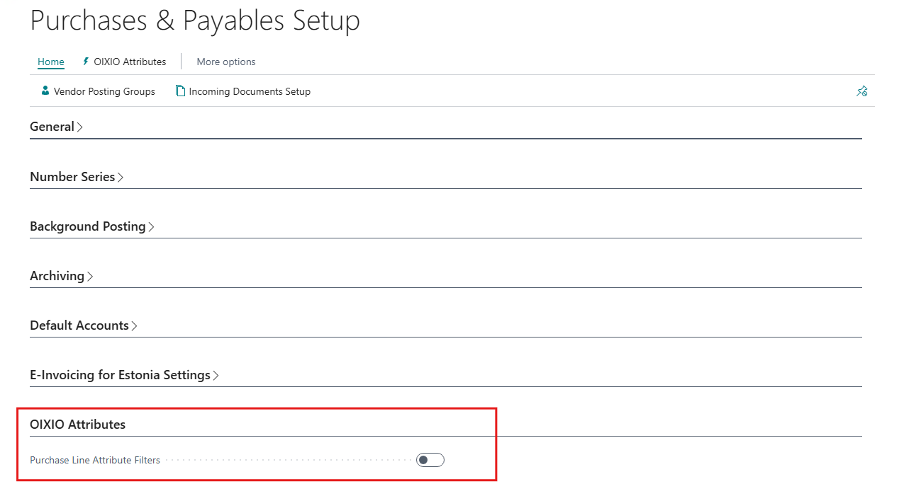
• Sales and sales Receivables setup -- Sales line attribute filters
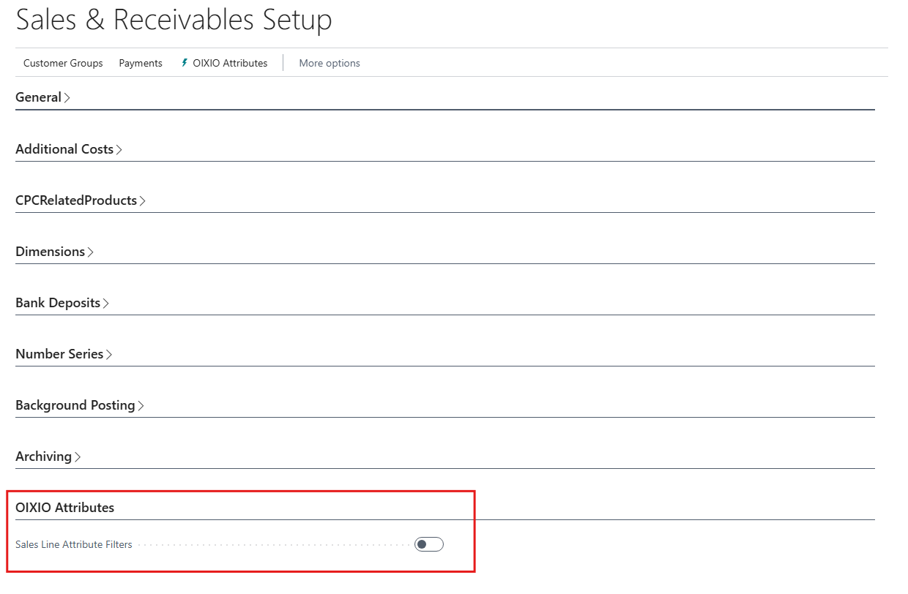
• Manufacturing setup -- Production order line and product family line attributes
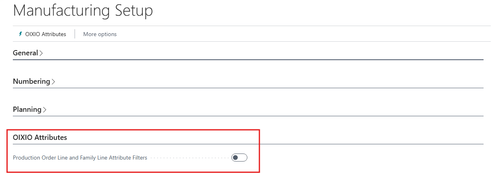
• Inventory setup -- Transfer order line attribute filters and Use attribute set ID
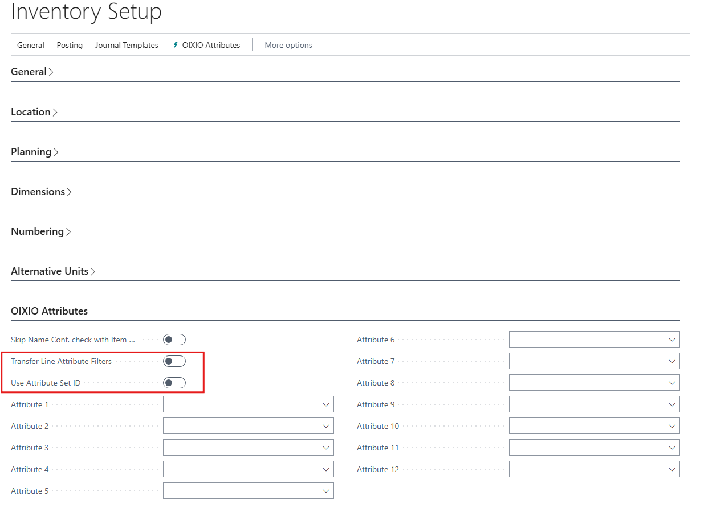
Managing Attribute Filters
In the Attributes section of the Inventory setup page, specify the item attributes you want to see as filters on various base document lines. Up to 12 attributes can be used.
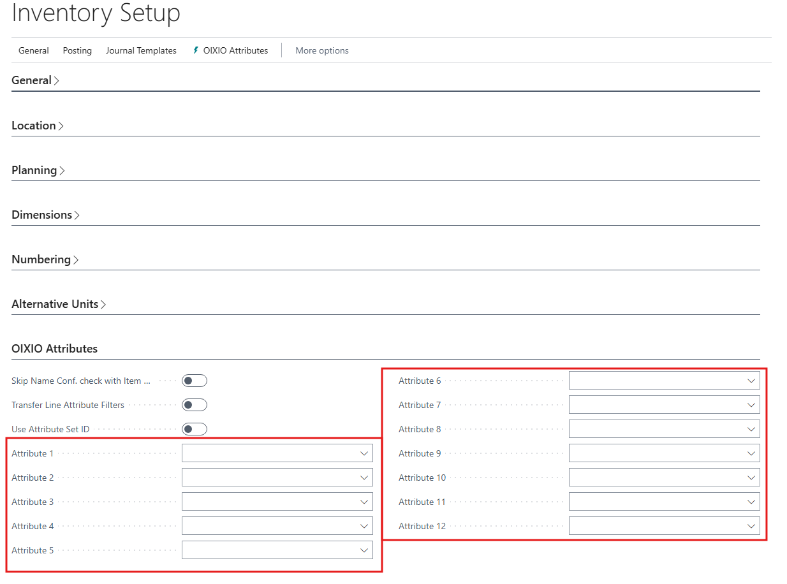
Business Central manages created item attribute sets, ensuring the uniqueness of items created in the item configurator and smooth item matching on different base documents.
During initial setup, update the Item Attribute Set IDs to create this table. You can do this from the Oixio Attributes submenu of Inventory setup.

Using Attribute Filters
With this functionality enabled, attribute filters are applied to the following documents: blanket purchase order, purchase order, purchase invoice, purchase return order, purchase credit memo, blanket sales order, sales order, sales invoice, sales return order, sales credit memo, transfer order, production BOM lines. Production order documents have an added factbox for Item Attribute Filters. You can find it by selecting the "i" icon in the top right corner of the document for details. It consolidates the attribute filter values from the Lines submenu for quick reference.
Below is an example of using attribute filters on a purchase order. Each filter can be defined with one or multiple values. For multiple selections, use the range and multiple value filter options in Business Central, such as specifying item length as a range.
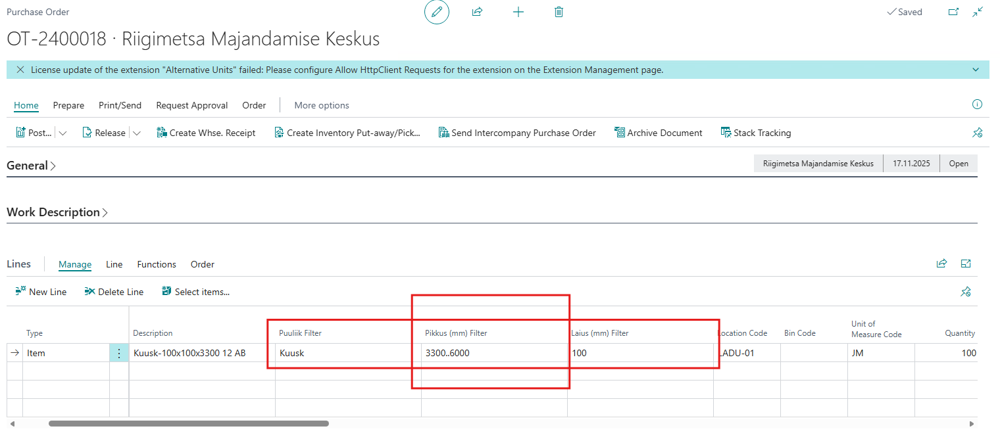
Setting Formulas for Item Description Configurator
Preset item name configurator formulas can be created for each item category. To do this, search for Item Categories. In the opened window, select the item category you want to describe the formula for. Then, choose Item Description Configurator from the Actions menu.
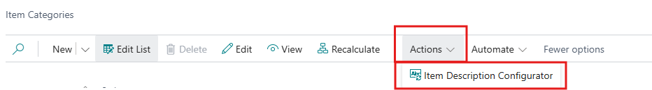
When describing the item formula, you can use the following:
• Prefix -- a prefix added before the item code name formula
• Suffix -- a suffix added after the item code name formula
• Attribute name -- the item attribute name to use in the item description
• Separator -- the format for separating attribute names
• Separator text -- the separator value in text format
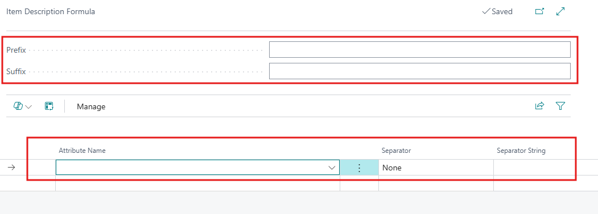
Changing Item Description Based on Attributes
Create description based on attributes -- Allows you to change the name format of an existing item, using the description formula set for the item category as the default value.
To change an item's description, select the item(s) in the Items list whose description you want to change. Then, from the list header, choose the following menu options: Actions, Functions, and Create description using attributes.
If necessary, make changes to the formula by enabling the Modify marker. To add or remove attribute names from the description, use the Add line and Delete line options as needed. Confirm the action by selecting OK.
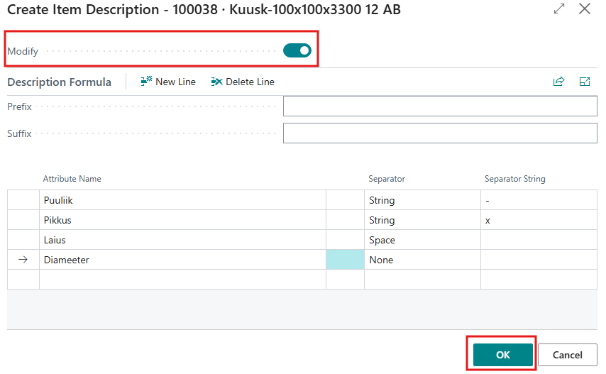
Creating New Item Codes
Create items based on attributes -- Allows copying an item using the existing item's attribute set and description formula.
To create new item codes, go to the Items list. Select the item code to use as the basis for the new items, and from the list header, choose the following submenu options: Actions, Functions, and Create items using attributes.
The item configurator description formula will be filled with the formula and attribute values from the selected item. Additionally, confirmation is requested to change the item formula if the item has attribute values not present in the formula. Adjust the item formula as needed. For new items, describe the changing attribute values. To specify multiple values for one field, separate them with a vertical bar (|).
Mark the appropriate markers in the item configurator submenus to include other related information from the copied item. For example, by marking the dimension marker in the General menu, the dimensions of the base item will be included in the new item. Confirm the creation of new item codes by selecting OK.
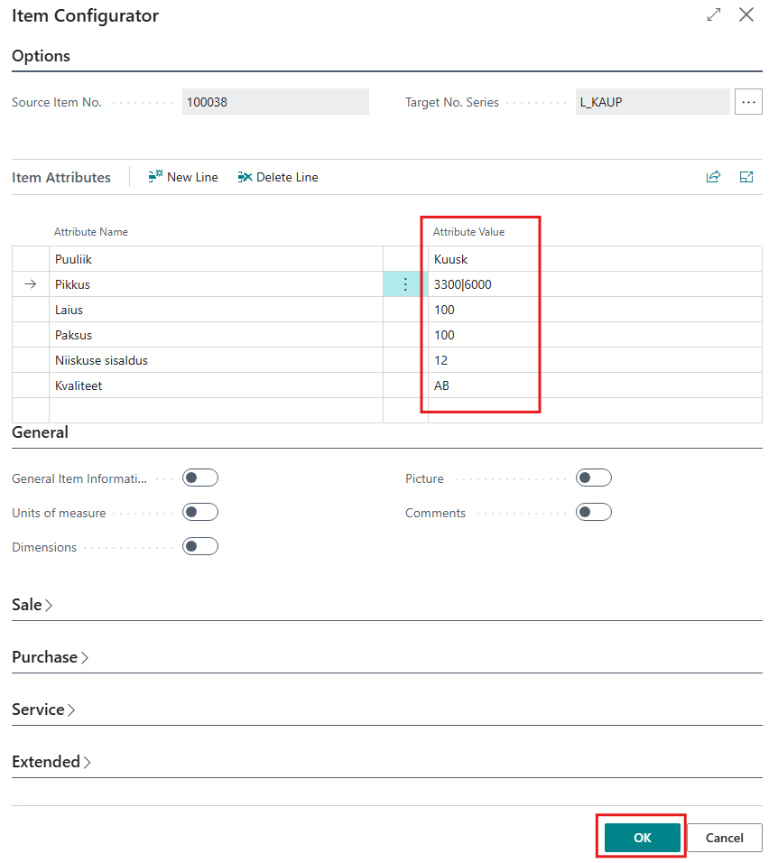
Additionally, check the formula used in the item description and confirm it by selecting OK. Before creating the item, a check is performed against existing attribute combinations; only items with unique attribute sets are created.
Skip Name Conf. check with Item Configurator- In the OIXIO Attributes submenu of Inventory setup, you can disable the above-mentioned intermediate check using this setting.
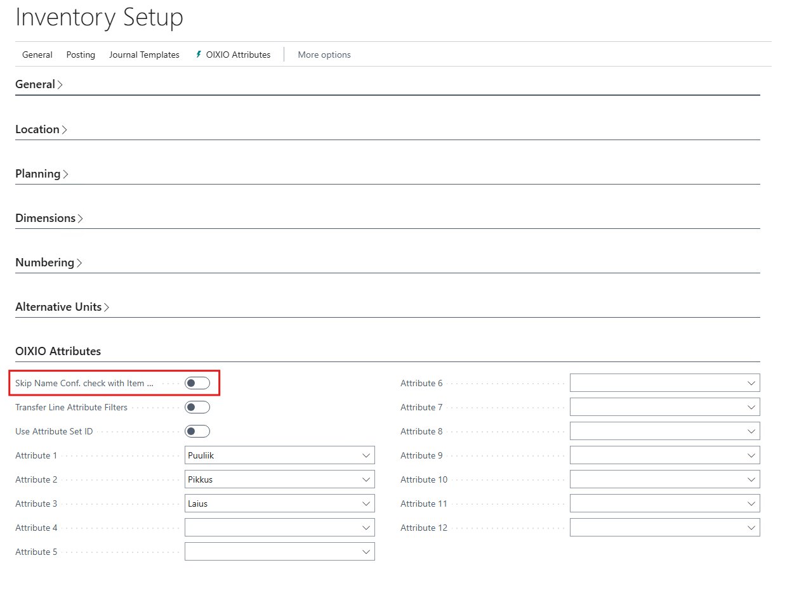